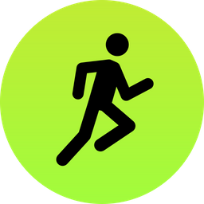

Apple Watch & Fitness
Apple Watch is unlike any other watch in the world. It can do so many different things like, taking phone calls, texting, and most importantly keeping track of your health. With Apple Watch you can track
your workouts at the gym or at home. And Apple Watch gets even better with friends. Compete with your friends to keep you motivated stay and on track. Apple Watch has three acvitivty rings to close each
day to help you achieve your goals. The pink ring is the move ring and tracks your total calories in a given day. The green ring is the exercise ring and keeps track of the exercise you do each day.
The blue ring is the stand ring. This will remind you stand up for a minute every hour. All your exercise data is stored safely in the Activity app on your iPhone.
Apple Fitness +
With gyms closed all around the country and more of us staying home, many people are unable to workout. Coming later this month Apple is launching "Apple Fitness +", which will allow apple watch users to
participate in world class work out sessions from just about anywhere.
